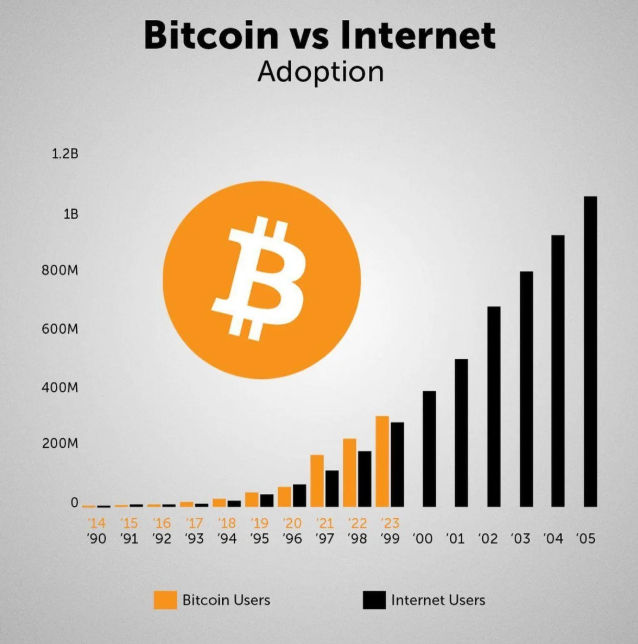

I. Les cryptomonnaies, c'est quoi ?
Les cryptomonnaies sont une nouvelle forme de monnaie numérique. Bien qu'étant en tout point une révolution dans le système monétaire et financier, elles demeurent pour le moins encore peu connues du grand public.
La plupart des cryptomonnaies sont totalement indépendantes des monnaies fiduciaires (monnaies d'États telles que le dollar ou l'euro) et par extension, des banques centrales. En effet, la révolution qu'apportent les cryptomonnaies réside dans le fait que, lors d'une transaction, on se passe de tiers de confiance tels que les banques.
Si aujourd'hui vous voulez envoyer de l'argent à un ami, et bien c'est en réalité la banque qui s'en chargera, vous déléguez de ce fait la confiance de vos fonds, et dans ce cas de votre échange, à une entreprise. Lorsque l'on souhaite envoyer de la cryptomonnaie à une autre personne, aucune banque n'entre en jeu dans la transaction, on assiste donc à un échange de valeur monétaire directement de particulier à particulier, ou plus précisément de pair à pair (peer-to-peer).
Les monnaies fiduciaires, à contrario, nécessitent l'engagement d'un tiers de confiance, dès lors que la transaction est numérique. En effet, on peut aisément payer de particulier à particulier avec de l'argent liquide, mais cela reste extrêmement restrictif à partir d'une certaine somme.
Si l'on compare les deux courbes, on se rend compte qu'elles sont presque identiques. Cela nous donne un précieux indice quant à l'adoption de cette technologie par la population. On peut aisément dire que plus des personnes utilisent une nouvelle technologie, plus celle-ci est révolutionnaire car utile. Ce qui semble être le cas des cryptomonnaies.

Même si les cryptomonnaies ont, pour l'heure, peu d'utilité et d'intérêt pour le grand public, il n'en est pas moins que ces monnaies représentent le futur, que ce soit dans le monde du paiement, de l'actif numérique, ou bien même du futur d'internet que l'on nomme Web 3.0.
Vous pouvez retrouver l'ensemble des cryptomonnaies, leur cours actuel ainsi que leur classement par capitalisation dans le marché, sur les sites www.coinmarketcap.com ou www.coingecko.com.
🔑 Vocabulaire technique essentiel
D'un point de vue plus technique, chaque cryptomonnaie se compose de pièces de monnaie que l'on appelle des tokens (jetons en français). Voici les termes à connaître :
- Supply : Le nombre de pièces de monnaie disponibles actuellement, donc la masse totale de token en circulation sur le marché. Par exemple, la supply du Bitcoin est d'environ 19 millions à l'heure actuelle.
- Supply max : Une monnaie peut avoir une limite maximum de tokens, c'est-à-dire qu'à partir d'un certain seuil de tokens émis, il ne sera plus possible d'en créer de nouveaux.
- Symbole monétaire : Comme toutes monnaies, les cryptomonnaies ont un symbole composé de 3 à 4 lettres majuscules. Le symbole du Bitcoin est BTC.
- Market Cap (Capitalisation) : La totalité des fonds investis sur une cryptomonnaie. C'est par le biais de cette capitalisation que l'on classe les cryptomonnaies. Par exemple, le market cap du Bitcoin à son ATH était d'environ 1 330 000 000 000$.
II. Petite histoire du Bitcoin : Son but et son fonctionnement primaire
Précédemment, j'évoquais les cryptomonnaies comme étant une révolution dans plusieurs domaines distincts. Afin de vous expliquer les aspects révolutionnaires de cette technologie, je ne peux trouver de meilleur exemple que celui du Bitcoin.
Bitcoin est la première vraie cryptomonnaie jamais créée, bien que d'autres monnaies numériques existaient avant elle, notamment BitGold ou B-Money. On ne connaît pas la réelle identité du, ou des, créateur(s) du Bitcoin, tout ce que l'on sait se résume au pseudonyme laissé dans le White Paper (feuille explicative sur le fonctionnement et les aspirations d'une technologie), qu'il aurait rédigé et échangé sur des forums en ligne sur lesquels il utilisait aussi ce même nom d'emprunt. Ce pseudo c'est Satoshi Nakamoto.
Pour fonctionner, le Bitcoin se sert d'une technologie assez peu connue du temps de sa création, mais qu'il a par la suite fortement contribué à faire connaître : il s'agit de la blockchain. La blockchain étant le cœur d'une cryptomonnaie, nous verrons plus en détail ce que c'est dans le prochain chapitre. Retenez juste qu'il s'agit là du réseau utilisé par une cryptomonnaie afin d'enregistrer et d'encrypter les données produites par les différentes transactions et qui permet de vérifier leur vraisemblance.
💡 Pourquoi le Bitcoin a-t-il été créé ?
Bon c'est bien beau tout ça, mais Bitcoin ça sert à quoi ? Grâce au White Paper du Bitcoin rédigé par son créateur, on apprend que l'idée de sa création fut en premier lieu la conséquence de la crise financière de 2008.
En effet, les monnaies d'États aussi appelées monnaies FIAT ou encore monnaies fiduciaires, évoluant dans un écosystème complexe, pour le moins opaque et méconnu de la plupart des gens en dehors des cercles financiers, leur gestion est très délicate et assez difficile à tenir sur du long terme, car nombreux peuvent être les causes qui affecteront l'économie et, par relation de cause à effet, les monnaies.
De ce fait, plusieurs crises ont déjà eu lieu suite à de mauvaises gestions de par les grandes banques centrales, donc les États ainsi que les banques privées ayant tantôt abusé de dérives et aberrations monétaires à des fins lucratives, tantôt mené des politiques globales très fragiles.
Ce faisant, Satoshi Nakamoto ne voit qu'une solution : il s'agit d'une monnaie qui serait totalement décentralisée.
Centralisation vs Décentralisation
Pour expliquer la notion de décentralisation, quoi de plus simple que de vous donner son contraire : la centralisation. La centralisation est le fait, d'un point de vue monétaire, qu'une entité gouverne à plein pouvoir l'impression de la monnaie, sa politique, ainsi que ses transactions et leur gestion.
Cette centralisation était évidemment inévitable avant l'invention des ordinateurs, d'internet et d'une mondialisation assez avancée, qui sont les principales innovations permettant de créer une monnaie unique complètement décentralisée.
En effet la décentralisation, dans le cas du bitcoin, est permise uniquement car le système est autonome. Il s'agit d'un algorithme permettant le fonctionnement et la comptabilité des échanges dans son propre réseau (blockchain), afin de se passer de l'action humaine quant à l'enregistrement des transactions, du taux d'inflation ainsi que de l'impression monétaire.
De par ce biais, Satoshi Nakamoto espérait créer une monnaie refuge permettant de se couvrir de l'hyperinflation des monnaies FIAT fortes (telles que euros ou dollars) ainsi que d'autres aspects propres au fonctionnement bancaire tels que les nombreux frais de gestions et autres joyeusetés dont les banques sont les seules maîtres décisionnaires.
Pour résumer : personne, ni aucune organisation de n'importe quelle nature ne peut débloquer du Bitcoin à sa guise, contrairement à l'euro par exemple dont la BCE n'hésite guère lorsqu'il s'agit de faire chauffer la planche à billet, créant ainsi de l'inflation. L'inflation du Bitcoin est donc totalement contrôlée et immuable car le réseau débloque les nouveaux tokens tous les x temps, et personne ne peut changer cette règle car l'algorithme est conçu tel quel.
Aussi personne ne vous demandera des comptes sur votre argent comme sa provenance, ni même ne vous soutirera des sous pour avoir laissé votre argent sur un compte bancaire alors même que vous êtes obligé d'en avoir un pour récupérer votre salaire (frais de gestion).
En bref, le Bitcoin c'est la liberté monétaire et la garantie qu'on est le possesseur de sa monnaie. C'est aussi le moyen de se débarrasser des banques privées dont le but est de se faire de l'argent en gardant le vôtre.
Définition synthétique : Le Bitcoin c'est simplement un moyen d'échange de valeur (monnaie) numérique émise sur une base de données distribuée et immuable, totalement peer to peer et décentralisée.
III. Altcoins, les autres cryptomonnaies et leurs portées technologiques
Le Bitcoin est une des premières cryptomonnaies, seulement beaucoup d'autres ont vu le jour depuis avec divers projets, utilisations et méthodes de fonctionnement. Bien qu'elles soient toutes des cryptomonnaies à part entière, on appelle les autres cryptos, hors Bitcoin, des Altcoins. Cette norme vous montre déjà à quel point les initiés à la cryptomonnaie voient le Bitcoin comme le père des cryptos, et démontre qu'il est la référence lorsque l'on parle de cryptomonnaies.
Les altcoins, souvent raccourcis en « alts », représentent donc l'ensemble des cryptomonnaies en dehors du Bitcoin. On estime qu'il en existerait près de 20 000.
🗂️ Les 3 grandes familles d'altcoins
Il existe plusieurs types de cryptomonnaies, ce qui déjà vous permettra d'y voir un peu plus clair. On distingue trois grandes familles d'altcoins, facilement identifiables de par la nature de leur projet :
1. Les Altcoins à fondamentaux
Les altcoins à fondamentaux sont tous les alts apportant une solution ou innovation nouvelle dans l'écosystème des cryptomonnaies. Cela peut toucher un vaste panel de domaines possible si tenté que la finalité du projet soit l'apport d'une plus value technologique, en lien avec les cryptomonnaies.
Beaucoup de ces Altcoins à fondamentaux sont des projets visant à révolutionner le web actuel, en créant ce que l'on appelle le web 3.0 (notion développée dans le chapitre 6). Ainsi Métaverse, protocole de finance décentralisée, monnaie numérique, service décentralisé tel que le streaming, la wifi, le partage de données ou même le stockage de ces dernières, sont autant d'innovations apportées par des projets cryptographiques de type fondamentale.
2. Les Shitcoins (Memecoins)
Aussi appelés memecoins ou crypto-blagues, les shitcoins sont une catégorie d'Altcoins, ayant la particularité de n'avoir aucun réel objectif de conception, si ce n'est la spéculation en terme d'actif financier.
Ainsi, ces cryptomonnaies n'apportent aucune réelle valeur ajoutée à l'écosystème. Leur objectif n'étant que la spéculation, il n'y a pas grand chose à attendre de ces cryptomonnaies. Puisqu'elles n'apportent aucune plus value et ne comblent aucun besoin, leur valeur réelle est très compliquée à déterminer.
Parmi le top 50, seulement deux tokens sont des shitcoins : Dogecoin, la première à avoir été créée, ainsi que le Shiba Inu.
IV. Les stablecoins : le pont entre les cryptomonnaies et les monnaies FIAT
Les stablecoins ont pour but, comme leur nom le présuppose, de proposer un jeton dont la valeur sera toujours la même, à quelques 0,05% prêt.
La plupart des stablecoins représente la valeur du dollar, soit un jeton sera égal à 1$. Bien qu'il en existe sur d'autres devises monétaires FIAT telles que l'euro ou le Yen. Parmi les stablecoins les plus utilisés, on retrouve l'USDT de la société Tether, le BUSD de l'échangeur de cryptomonnaie Binance, ainsi que l'USDC proposé par la société Circle.
💰 À quoi servent les stablecoins ?
1. Refuge en tendance baissière
Si vous achetez 1 BTC à 10 000$ et que celui-ci monte à 60 000$, vous aurez donc réalisé un x6 sur votre mise de
départ. Maintenant, rien ne vous dit que le marché ne va pas redescendre subitement. Pour pallier à cela, si
vous sentez que le marché risque de se retourner et que vous souhaitez donc sécuriser votre plus value, vous
n'avez qu'à échanger votre BTC contre l'équivalent en USDT par exemple.
2. Optimisation fiscale (France)
En France vous êtes taxé sur chacune de vos plus values, à hauteur de 30%. Cette taxation ne
s'applique qu'en cas de conversion de vos cryptomonnaies en monnaie FIAT (euro, dollar etc). En utilisant des
stablecoins, vous n'êtes donc pas taxé puisqu'il s'agit d'une conversion de cryptomonnaie à cryptomonnaie.
3. Finance Décentralisée (DeFi)
Les stablecoins permettent des rendements assez conséquents en les bloquant durant une longue période afin d'en
générer des intérêts, c'est ce que l'on appelle le staking. C'est à peu de chose près comme le
livret A, sauf que vous pouvez en espérer entre 10 et 20% de rendement annuel.
🔐 La collatéralisation : comment la valeur est garantie ?
Mais alors qu'est ce qui garantit que derrière chaque unité de stablecoin, se cache bel et bien la valeur d'un dollar ? C'est la collatéralisation. Il y a différentes sortes de collatéralisations :
- Collatéralisation fiat : La société émettrice possède dans un compte en banque l'équivalent de sa supply en argent réel. Ainsi, s'il y a 200 000 unités de stablecoin, la société se doit de posséder 200 000$ sur un compte en banque.
- Collatéralisation par actifs financiers : La société achète des produits financiers liquides (actions, obligations) d'une valeur légèrement supérieure à sa supply, afin de garantir qu'en cas de baisse de la valeur de ses actifs financiers, elle puisse quand même avoir l'équivalent afin d'obtenir 1$ par unité.
- Collatéralisation algorithmique : Pour émettre un token stablecoin, le système algorithmique va détruire l'équivalent en valeur d'un autre crypto-actif. Par exemple, pour émettre 1 UST (stablecoin), le système détruit l'équivalent de 1$ de token LUNA. La valeur du token UST est donc garantie par la destruction du token LUNA.